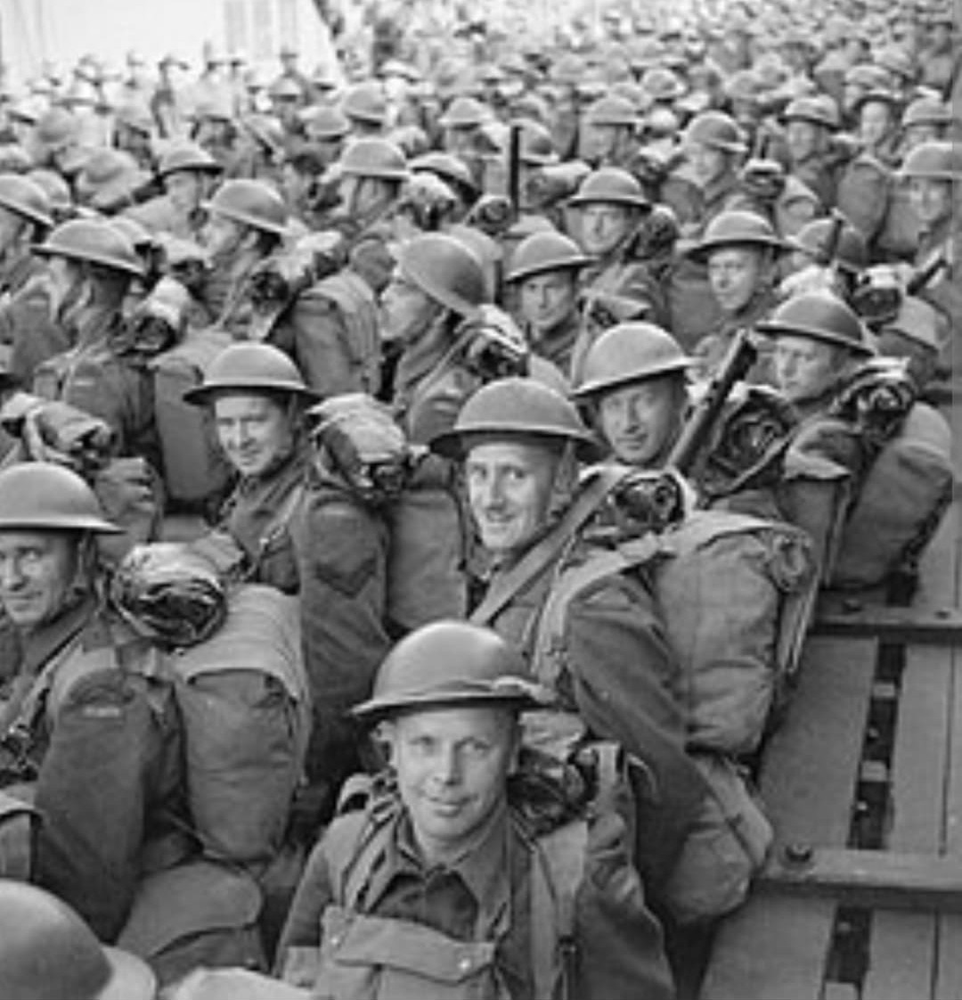
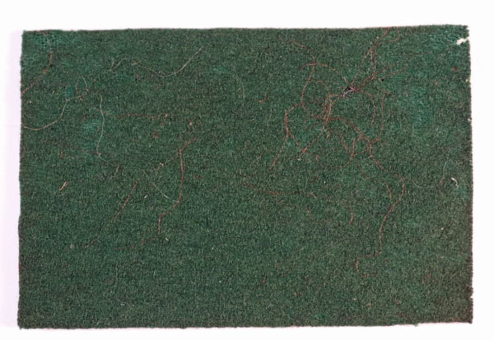
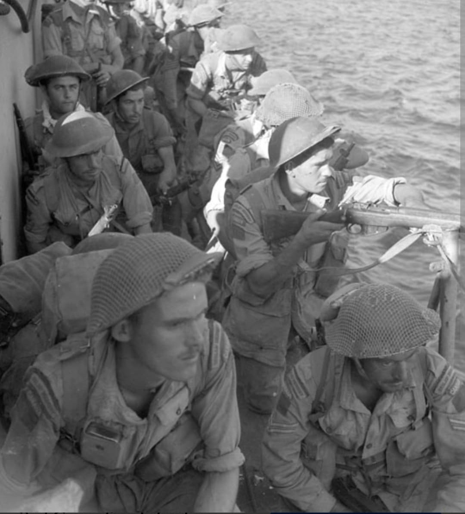

La puissance blindée canadienne : de la fermeture décisive du couloir de la mort à Chambois aux violents combats de l'Escaut et du canal de Twente

La 4th Canadian Armoured Division (4e division blindée canadienne) est l'unique formation blindée de la First Canadian Army déployée sur le front de l'Ouest durant la Seconde Guerre mondiale.
Convertie d'infanterie en division blindée en 1942, elle s'est distinguée par son punch tactique et son agressivité lors des phases de percée et d'encerclement en Europe, jouant notamment un rôle capital dans la fermeture de la poche de Falaise en août 1944.
Mobilisée en 1940 sous forme d'infanterie, la division est réorganisée en unité blindée en Angleterre sous le commandement du major-général **George Kitching** (puis du major-général **Christopher Vokes**). Elle rassemble des unités blindées et d'infanterie portée réputées, telles que The Governor General's Foot Guards, The Canadian Grenadier Guards, The British Columbia Regiment ou The Lincoln and Welland Regiment.
Son insigne d'épaule distinctif se compose d'un rectangle vert forêt (*The Green Patch*), perpétuant la tradition visuelle des divisions canadiennes aux côtés des insignes rouge, bleu et bleu ciel.

Débarquée en Normandie fin juillet 1944, la 4th Armoured Division participe aux opérations *Totalize* et *Tractable*. Son fait d'armes le plus retentissant survient entre le 18 et le 21 août 1944 lors de la jonction avec la 1re division blindée polonaise et les troupes américaines à **Chambois** et Saint-Lambert-sur-Dives.
En scellant la seule voie de retraite des 7e et 5e armées blindées allemandes, les équipages de Sherman et le South Alberta Regiment mènent des combats d'une férocité extrême contre les vagues d'infanterie et de panzers ennemis désespérés d'échapper au piège de Falaise.

Après la poursuite à travers la France et la Belgique, la division joue un rôle crucial dans la **bataille de l'Escaut** (automne 1944), forçant le franchissement du canal Léopold dans des conditions marécageuses éprouvantes pour les véhicules chenillés.
Au printemps 1945, la 4th Armoured s'illustre lors du franchissement du canal de Twente aux Pays-Bas, puis s'enfonce dans le nord-ouest de l'Allemagne, capturant Bad Zwischenahn et la région de Küsten Canal jusqu'à la cessation des hostilités en mai 1945.
Page du Musée HOP WW2 – Section Unités & Divisions